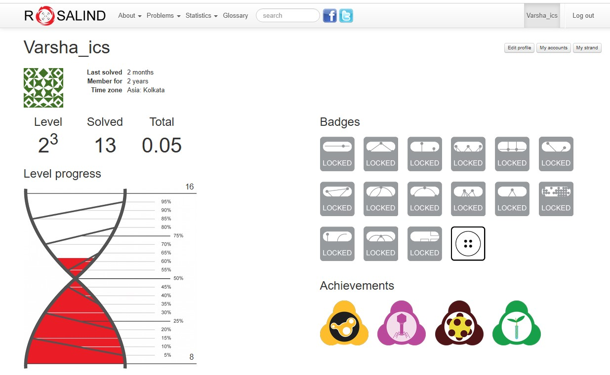
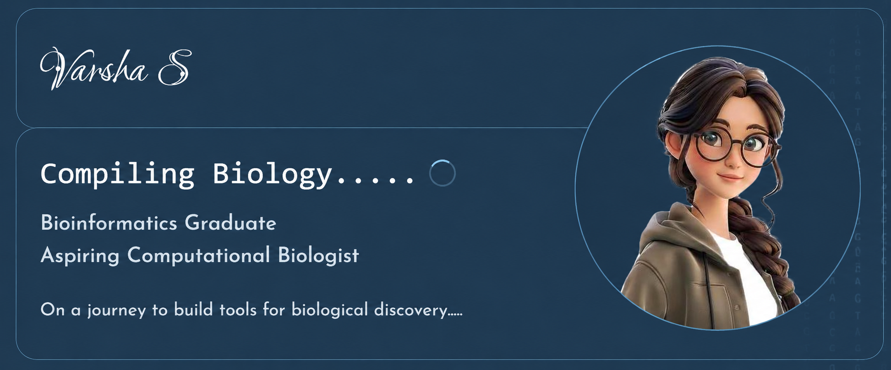
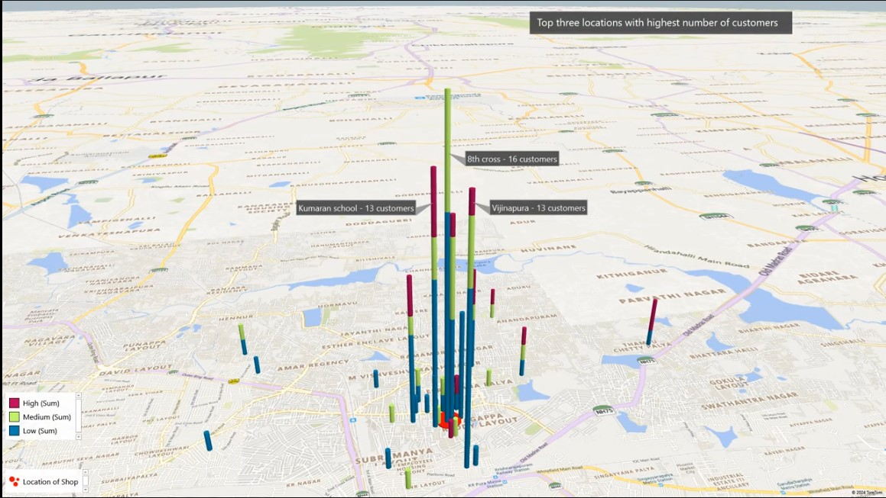
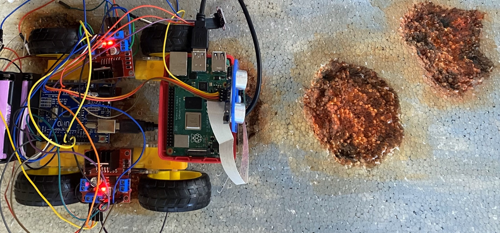
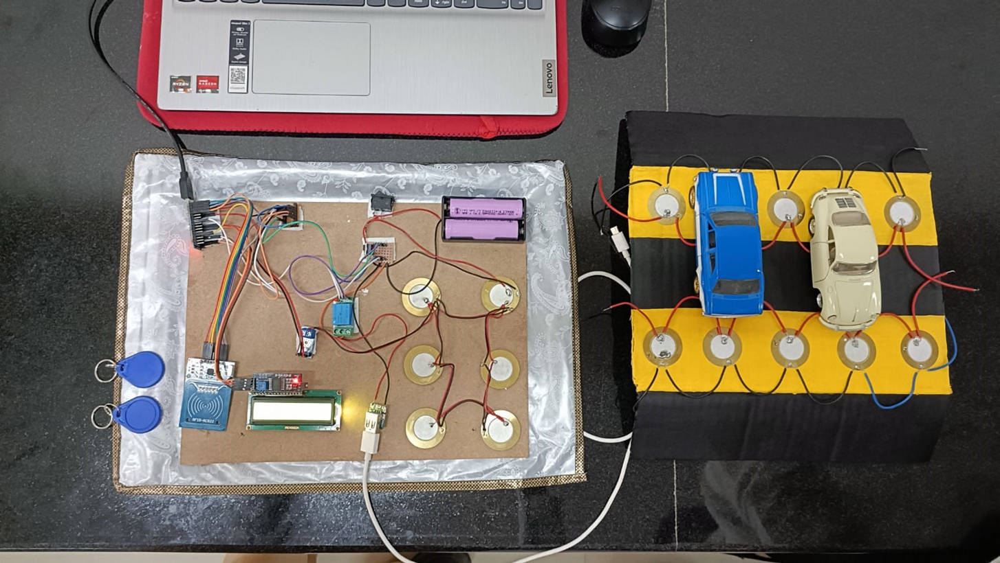

Bioinformatics Graduate
Aspiring Computational Biologist
On a journey to build tools for biological discovery.....
The Journey So Far
DenguScope
Visit the App ↗
Analyzed RNA-seq data from 73 dengue samples to identify transcriptomic biomarkers and developed a webapp for interactive visualization and exploration of results.
Grain2Gut
Visit the App ↗
Predicted functional profiles of four millet-derived lactic acid bacteria using 16S rRNA sequences and PICRUSt, and built a webapp for visualization and exploration of results.
Exploring Biology through Code
MHC-I Epitope Prediction
GitHub ↗Developed a Nextflow pipeline for MHC-I epitope prediction using UniProt sequences, IEDB API, and BLASTP-based filtering to prioritize vaccine candidate epitopes.
Rosalind Problems
GitHub ↗
Learning basics of algorithms behind bioinformatics tools.
Finding Patterns
Comment Category Prediction
GitHub ↗
Built a multi-class comment classification model using TF-IDF and machine learning algorithms with preprocessing and model tuning.
Business Data Management
GitHub ↗
Analyzed business data of VHS Designs to predict Non-seasonal ROI, identify potential locations, and generate insights for market expansion.
Where It All Started
SafePath
GitHub ↗
Developed a pothole detection system using YOLOv8 and LiDAR-based depth estimation with Raspberry Pi and Arduino.
PiEnergi
GitHub ↗
Designed a piezoelectric energy harvesting system using piezo sensors and Arduino to capture energy from vehicle deceleration.
Learning Under Pressure
BioHackathon
GitHub ↗Analyzed the CPTAC-LUAD multi-omics dataset integrating genomic, transcriptomic, and proteomic data to identify potential lung adenocarcinoma biomarkers.
ML for Protein Engineering
GitHub ↗Developed a computational workflow for de novo PD-1 antibody design, 3D structure prediction, and antibody–antigen interaction analysis.
From Ideas to Publication
Biomarker Discovery for Lung Adenocarcinoma Using CPTAC-LUAD Multi-Omics Dataset
Read Paper ↗Co-authored a research paper on multi-omics analysis of the CPTAC-LUAD dataset, integrating genomic, transcriptomic, and proteomic data to identify potential biomarkers for lung adenocarcinoma. The work was sponsored by the BioHackathon organized by UEM Kolkata and IIT Guwahati.
Tech Toolbox
🧬 Bioinformatics
- Nextflow
- DESeq2
- Biopython
- PyMOL
- AutoDock
- Cytoscape
🔬 Transcriptomics
- FastQC
- STAR
- HISAT2
- featureCounts
- StringTie
- CIRIquant
💻 Programming
- Python
- R
- SQL
- C
📊 Data Science
- Pandas
- NumPy
- Scikit-learn
- Matplotlib
- Plotly
⚡ Electronics
- Arduino
- Raspberry Pi
- MATLAB
- Simulink
🛠 Environment
- Linux
- Google Colab
Until the Next Compilation 🧬
What started with circuits led to cells and the journey continues through code.....Bye bye